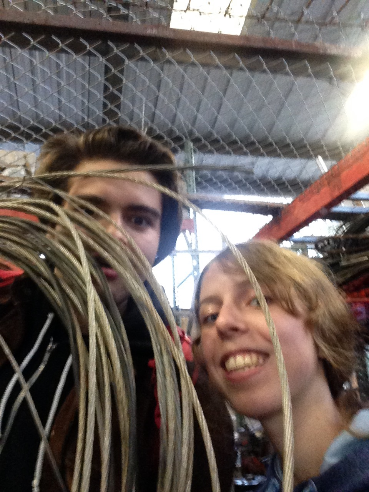
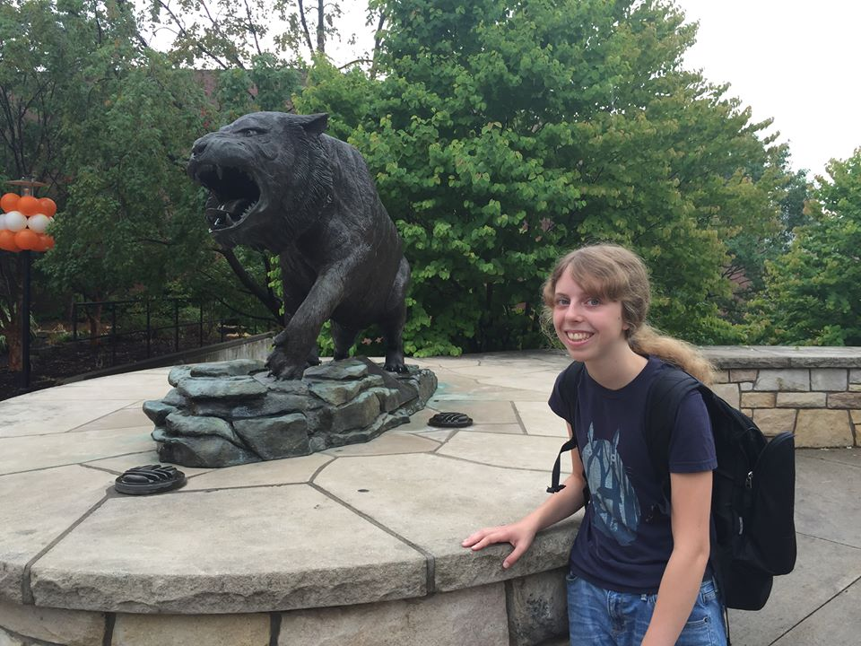

Sofie's
Senior EDCRO Review

My Beginning
Born deaf, I needed hearing aids in order to hear, but I also learned sign language.
When I was seven, my parents made a tough decision to get me a cochlear implant.
It helped me hear much better, and I no longer needed and interpeter.
However, my ASL began to deteriorate due to a lack of use.
Going to A3
I came to A3 because my parents suggested it. They said it was a good place to go to because, it was small, with a welcome community.
I was anxious in social situations and I had no idea what I wanted to do for my carreer.
Hopefully, A3 would help with that.
My First Headwaters
It was stressful at first, because I was surrounded by people I didn't know,
But then I came to know them, and eventually, I began to feel like I belonged
Because of this, I was motivated to thank everyone in a schoolwide conversation, and that experience really helped my confidence.
Learning Coding
One of my most impactful classes I had was Creative Coding.
It made me interested in programming and problem-solving
This class also gave me a direction for my carreer path.
This help set the stage for what was to come.
The Internship
Because my mother knew I was interested in coding, she suggested I apply for an internship at the U of O. I applied, and got in.
During the internship, I learned about how bacterial mutations worked.
My mentors had me create a interactive network visualization to help visualize the mutations.
From this, I learned a lot of new things about coding, and I wanted to share it.
Teaching Coding
My coding teacher invited me to help create his integrated math class by creating simulations that involved space, math, and coding.
In the process of creating these simulations, I refined my coding skills,
And gained experience in teaching
I have also created a new advanced creative class with my coding teacher that allows students to learn a multitude of coding languages
Additionally, I hope to be able to volunteer for Deaf Kids Code, a program that encourages younge deaf kids to do programming
Rediscovering ASL
My teacher suggested that I join an ASL class to fulfill my language credit and relearn sign language
At that point, my ASL had deteriorated due to a lack of use.
I wanted to be able to communicate better and perhaps reconnect, so I decided to take it.
The ASL Class
I learned more ASL and improved my ability to communicate with other Deaf people
I did a guest speaking where I shared my experiences as a Deaf person with the class
I learned about the history of Deaf culture, and the challenges many Deaf people face.
All these things culminated into a strong passion for ASL and a great respect for Deaf culture.
The ASL Club
I wanted to start an ASL club at A3 because I wanted to raise awareness about Deaf culture
I would do activities and exercises with the students to engage them in ASL
I also talked about the challenges that Deaf people face now, and what they can do to help
From this, I learned a lot about teaching, but I also hope that I helped more hearing people understand Deaf culture better
The EDX Talk
In one of my last Confluences, I did a humanitarian subject about a Portable Greenhouse. (I had actually inspired this class)
I had to do a rehearsed speech with my groupmate, and this was stressful.
However, after a lot of preperation, it was a success, and I became much more confidence in my communication.
My Identity
Deciding my Future
When deciding my college, I wanted to go somewhere with a strong computer science focus, but also had a good community.
In the end, I chose Rochester Institute as my college, because of it's deaf and hard of hearing community.
